研究→洞察
洞察Insight
比“研究”更有深度：不只看见，还真正看懂。
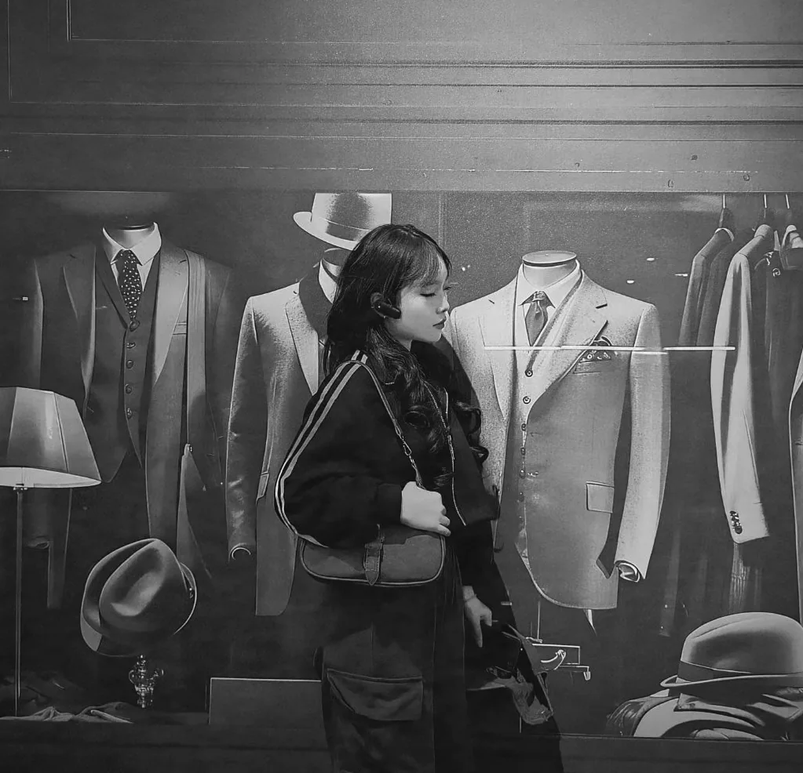
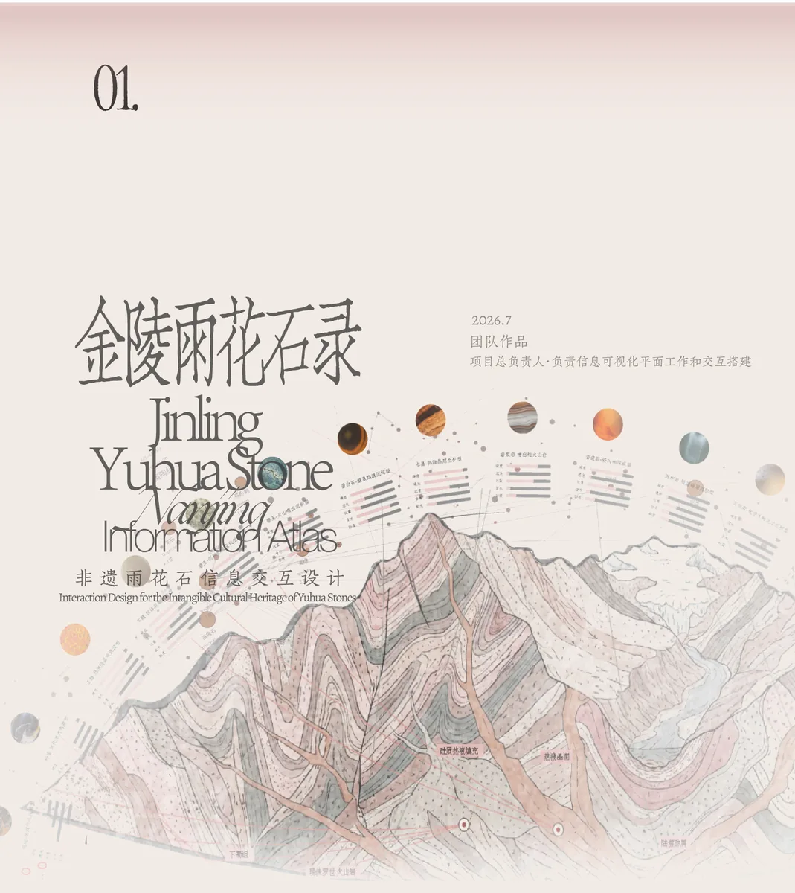
01 / SELECTED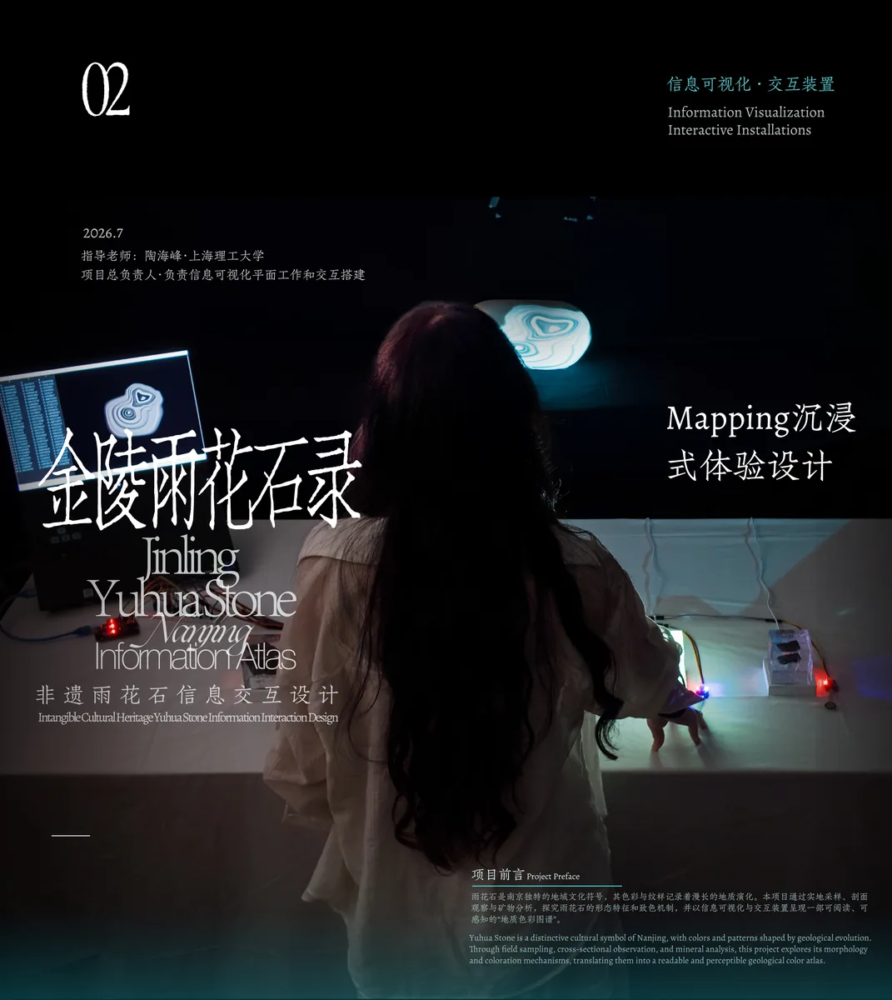
02 / SELECTED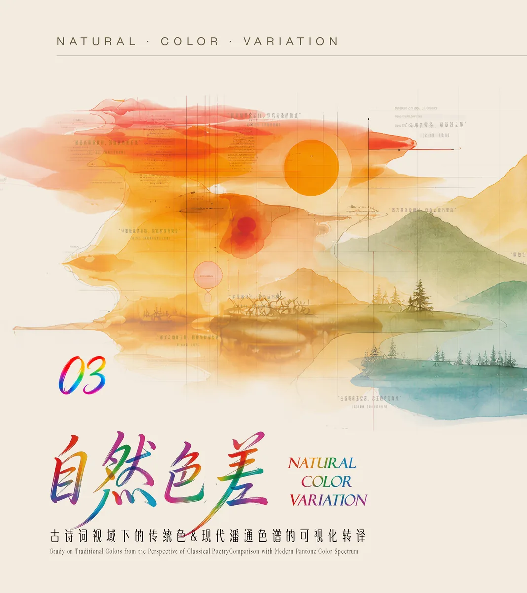
03 / SELECTED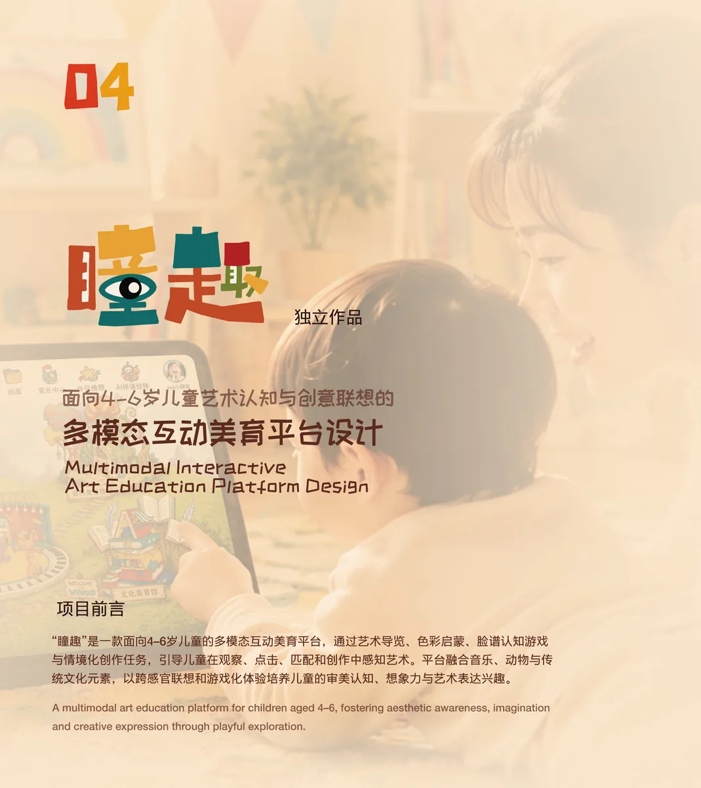
04 / SELECTED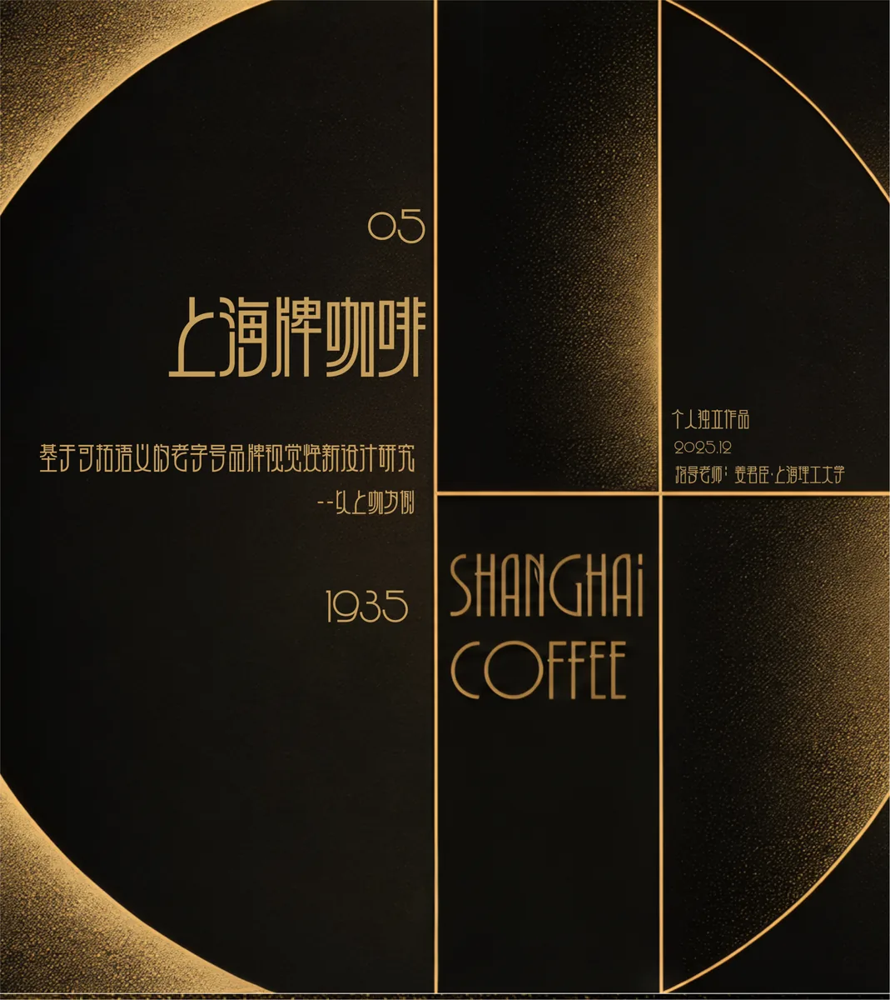
05 / SELECTED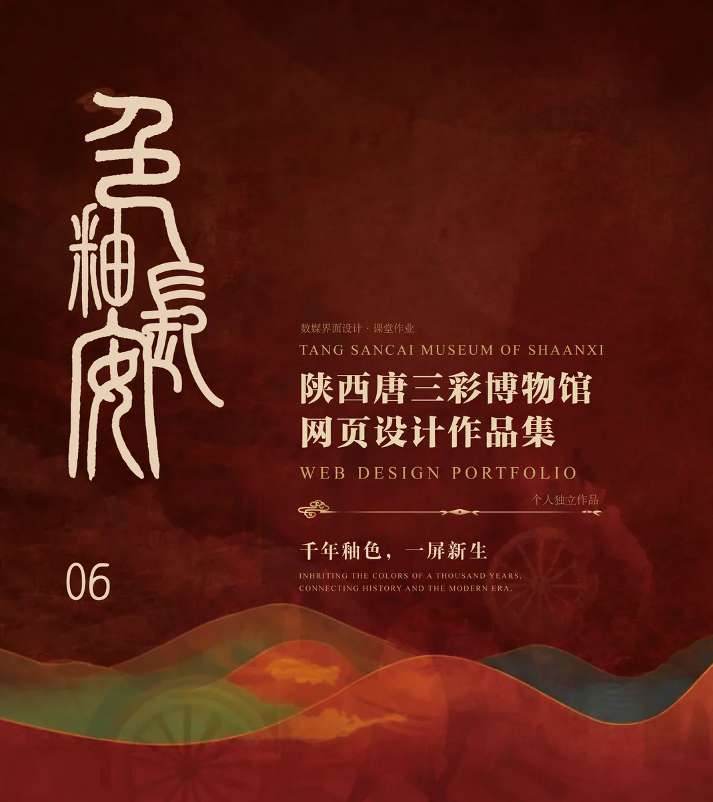
06 / SELECTED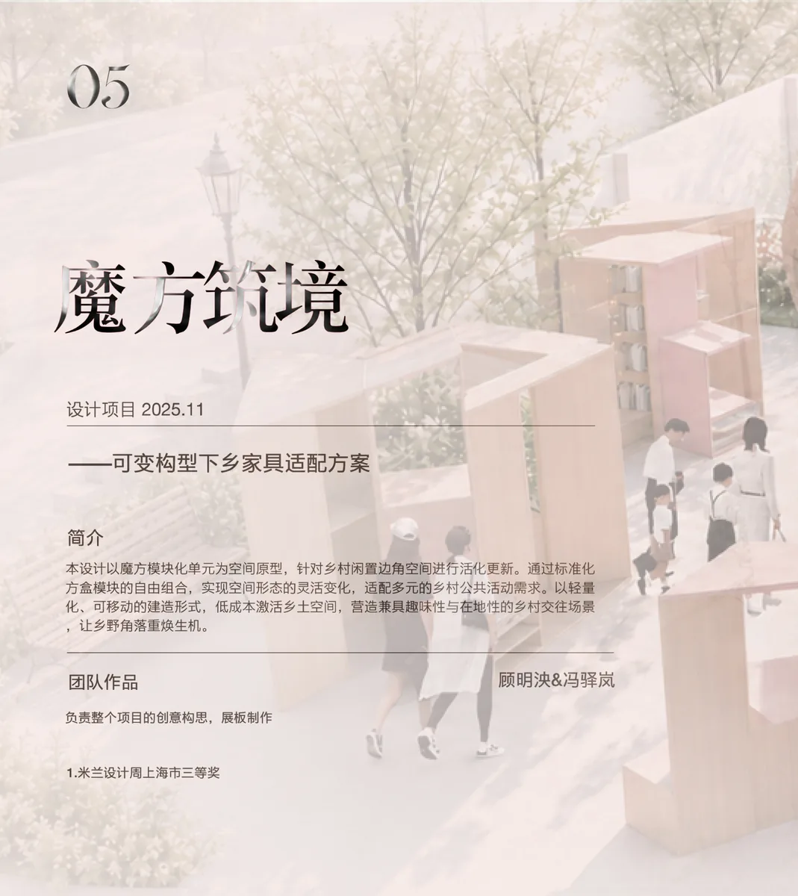
07 / SELECTED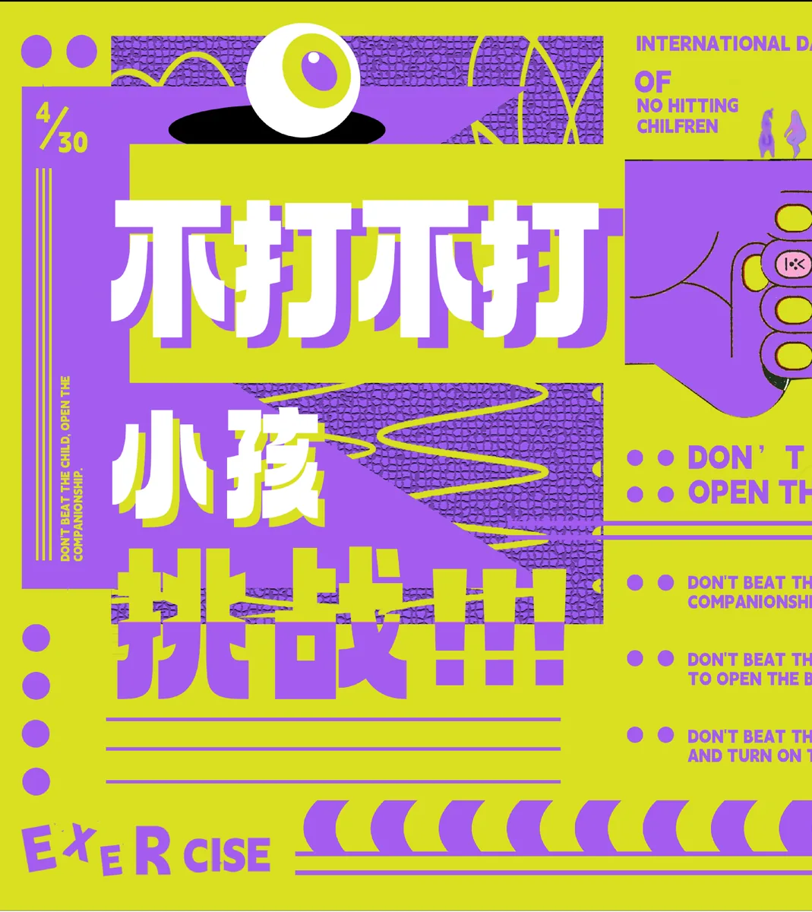
08 / SELECTED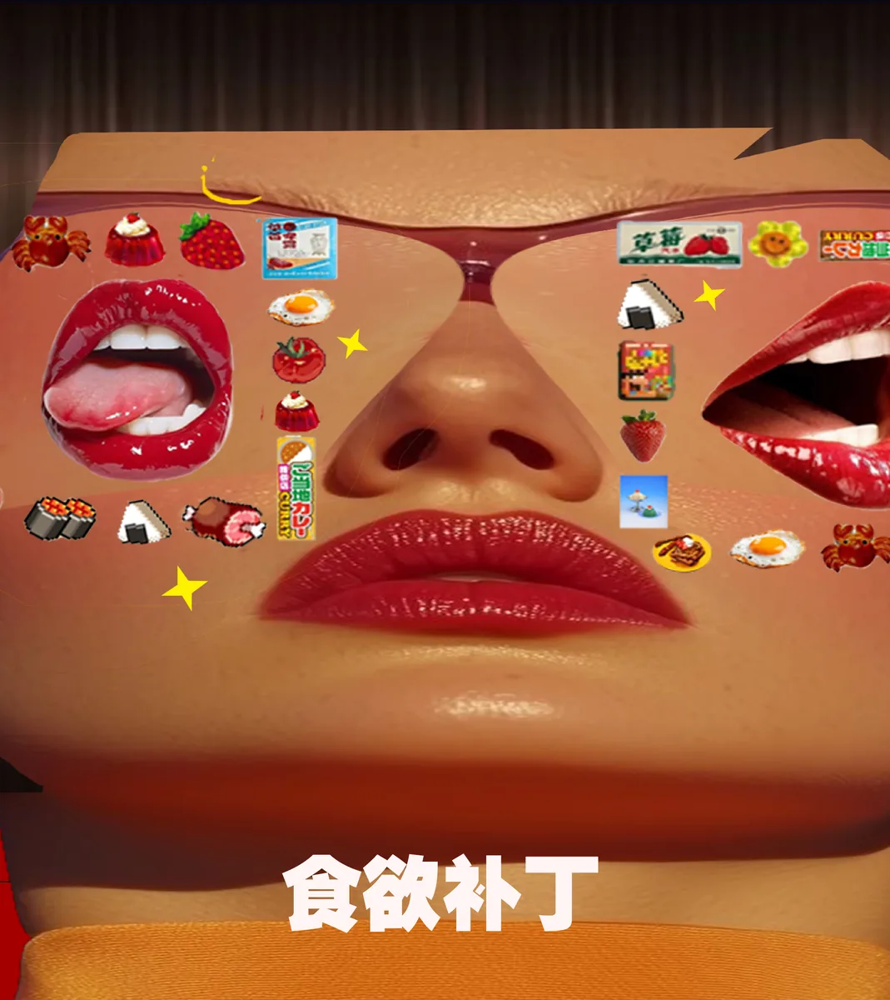
09 / SELECTED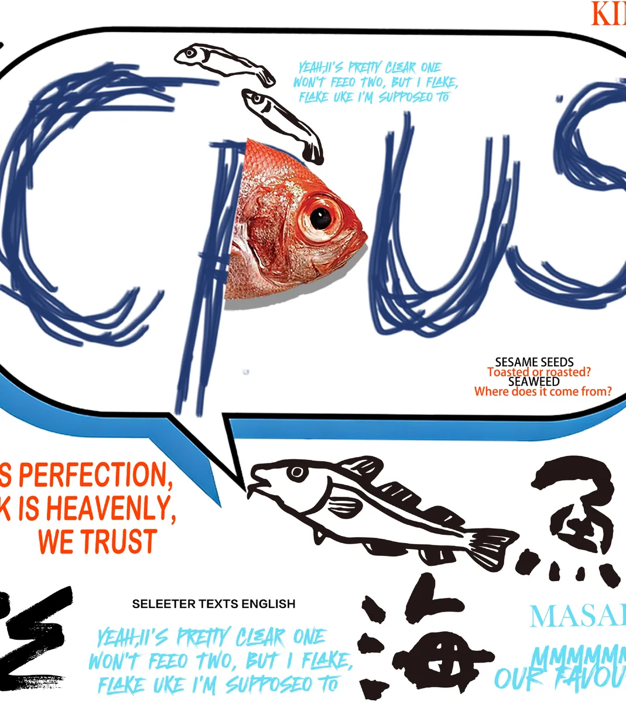
10 / SELECTED这些项目记录了我解决问题的多元路径。从敏锐的洞察到最终的呈现，完整的思考脉络均收录于此。
/ 查看全部作品 VIEW ALL /研究→洞察
比“研究”更有深度：不只看见，还真正看懂。
探索→实验
比“探索”更具行动力：让想法进入真实测试。
定义→构建
比“定义”更有建设性：把判断转化为具体产出。
验证→演进
比“验证”更动态：设计持续变化，而非抵达终点。
设计，是构建感知的秩序。在混沌的数据与冰冷的逻辑之间，寻找人性的接口。它不只是关于形式的创造，更是关于如何将抽象的系统，转译为可被理解、可被共鸣的生命体验。